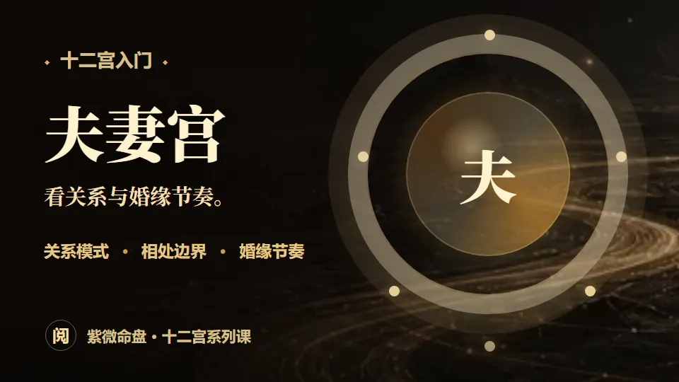
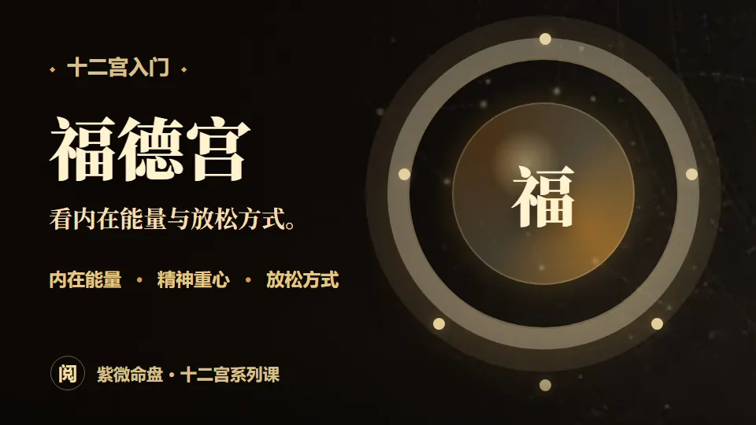
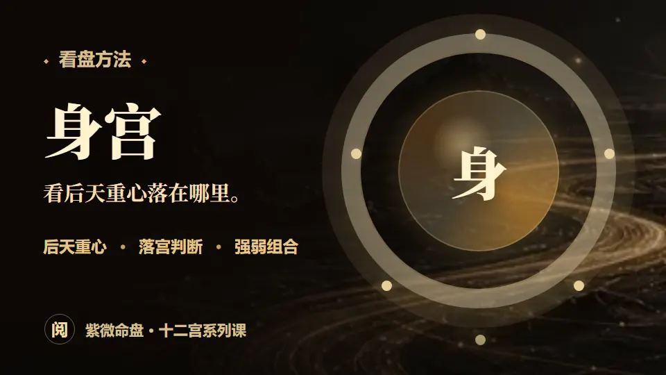

有个朋友拿着命盘来问：我夫妻宫看起来不太好，是不是婚姻就没指望了？
我先没回答她，反问了一句：你有没有看过福德宫？
她愣住了。大多数人看婚姻，眼睛里只有夫妻宫这一个格子。
夫妻宫只说了婚姻的一半
倪师讲得很直接。
「夫妻宫不能光看一个宫，看婚姻的时候，一定要看福德宫。夫妻宫很好啊，福德宫太烂，一样散。」
这句话把很多人从"一个宫定生死"的紧张里拉了出来。
夫妻宫再看，它也只是讲你伴侣的样子、你们相处的模式。可一段婚姻能不能长久，还看你自己的福气厚不厚、日子过得顺不顺——那是福德宫的事。
夫妻宫好、福德宫烂，婚姻一样保不住
所以你盯着夫妻宫越看越慌，其实是把一半的地图当成了整张。

福德宫，是一世福禄的底子
福德宫讲什么？
「什么叫福德？一个人一辈子的福禄。祸福无门，咎由自取。」
「福德宫代表夫妻的关系，也代表一世的福禄、财禄、事业。」
这里能看到一个很朴素的道理：
婚姻不是悬在半空的。它长在你整个人的日子上——你过得累不累、心里安不安、福气够不够，都会渗进两个人的关系里。
婚姻的样子，往往是你自己日子的样子
倪师还有一句更狠的：
「福德宫可以批终身。福德很差的人，一辈子很累。」
一个人自己都活得很累的时候，很难去要求一段轻松的婚姻。这不是谁对谁错，是底子在那儿。

你是不是这样误会过自己
看看有没有你的影子。
第一种：感情总是不顺，就认定"我夫妻宫不好，我这辈子就这样了"。
第二种：伴侣个性很强，你总觉得是他的问题，却没想过这也许早就写在盘上。
第三种：明明两个人条件都不错，日子却越过越累，你说不清哪里出了错。
如果你中了，先别急着给婚姻判死刑。你很可能只看了半张地图。
个性强的人，不一定是来克你的
很多人一看夫妻宫化权就紧张。
「夫妻宫化权，代表你的那一半的个性很强，领导力很强，主见很强。」
个性强、有主见——这不等于坏。它只是告诉你，对方是个有自己想法的人。
问题往往不在"他强"，而在"你俩怎么用这份强"。用对了，是个能扛事、能拿主意的伴侣；用岔了，才是谁也不让谁。
强势本身不是问题，用不用对地方才是
化权不是坏星，是你得学会和一份强势相处
看明白这一点，你就不会急着给对方贴"不好相处"的标签，而是开始想怎么配合。
还有一处你可能忽略了
「身宫在夫妻宫，后天被婚姻的影响很大。」
身宫讲的是后天。如果身宫落在夫妻宫，说明婚姻这件事对你后半生的影响特别大——好也好在这里，累也累在这里。
这解释了为什么有些人，一结婚整个人就变了；也解释了为什么有些人的低谷，是从婚姻开始的。
身宫落在这里，婚姻就不是生活的一小部分，而是会牵动全局的那部分。
身宫落夫妻宫的人，婚姻是牵一发动全身的那根线
不是你脆弱，是你的盘里，婚姻本来就是一根牵动全身的线。

三步，把婚姻这场仗看明白
说到能做的，还是三步。
- 把视野从一格放大到两张。别只盯夫妻宫，加上福德宫一起看。这一步给你的，是不再被一个格子吓住。
- 认出"强势"到底该怎么用。如果另一半确实有主见，想想怎么让它变成一个家的助力，而不是战场。这一步给你的，是从对抗转向配合。
- 把力气放回自己身上。福德宫讲的是你自己的福气。日子过得踏实了、心里稳了，婚姻自然会跟着松快。这一步给你的，是把遥控器拿回自己手里。
最后
婚姻从来不是一张盘上某一个格子能说清的。
夫妻宫讲一半，福德宫讲一半。你盯着一处慌，是因为没看到全局。
看全了，你会对自己宽容很多——
原来不是我命不好，只是我以前没看完整